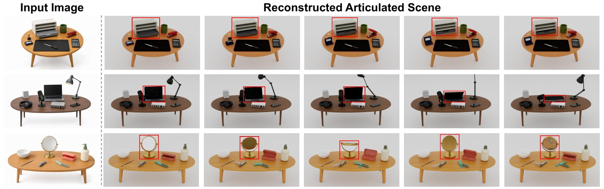

ArticuTableGenerating Instance-Level Interactive Rigid-Articulated 3D Tabletop Scenes from a Single Image
arXiv · 2026
ArticuTable reconstructs interactive 3D tabletop scenes from a single image, recovering movable object parts and a scene layout consistent with the input view.

Articulation Demos
Seven reconstructed tabletop scenes with articulated objects. These videos visualize joint motions; inter-object collisions may occur.
ArticuTable-100
A curated collection of 100 simulation-ready tabletop scenes. Download the scene asset package to explore and use the reconstructed environments.
Download AssetsCitation
@misc{lv2026articutablegeneratinginstancelevelinteractive,
title={ArticuTable: Generating Instance-Level Interactive Rigid-Articulated 3D Tabletop Scenes from a Single Image},
author={Kai Lv and Yibo Yin and Lijun Guo and Heng Fan and Kaihao Zhang and Xingping Dong},
year={2026},
eprint={2610.05249},
archivePrefix={arXiv},
primaryClass={cs.CV},
url={https://arxiv.org/abs/2610.05249},
}